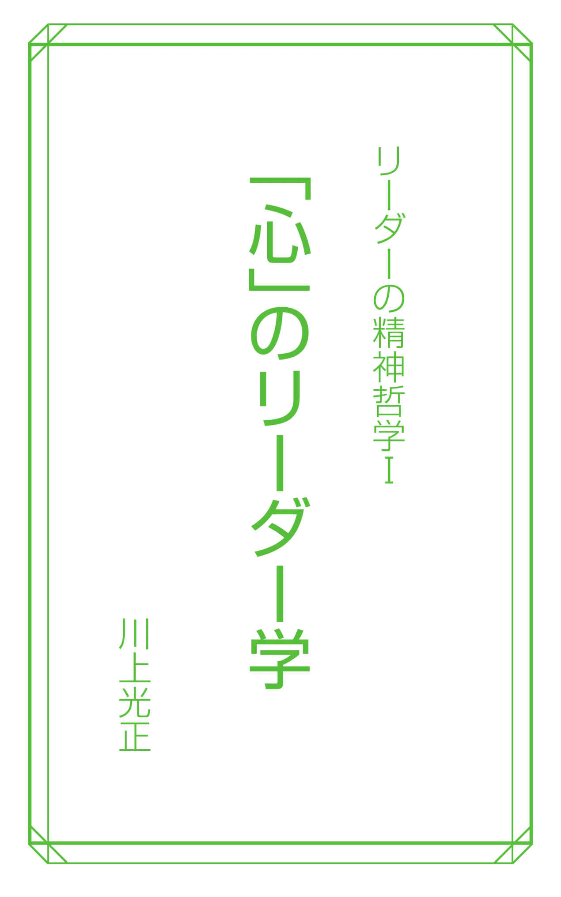
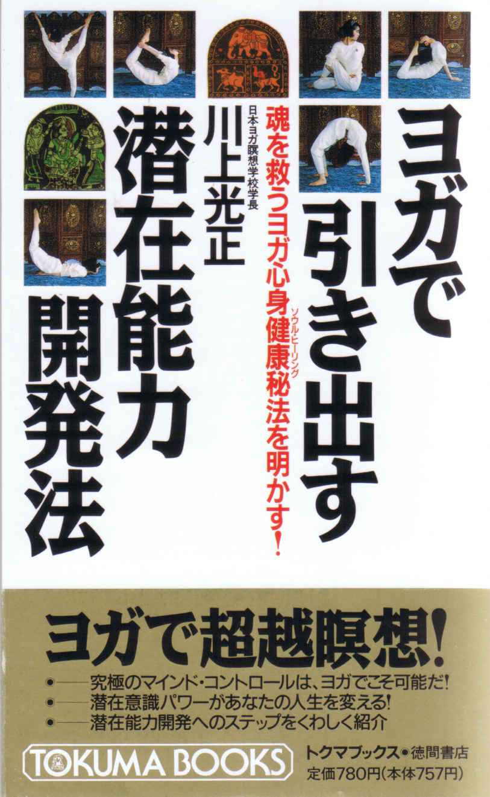
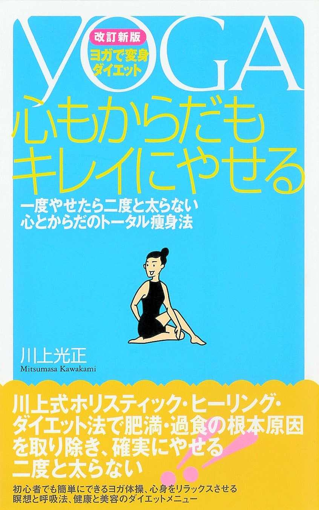
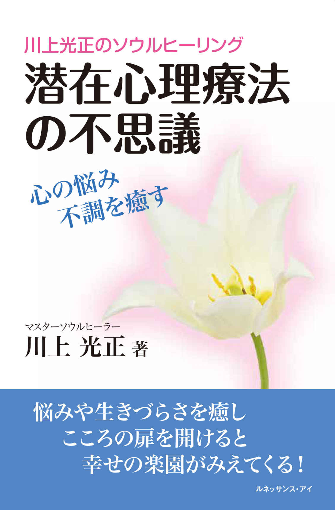
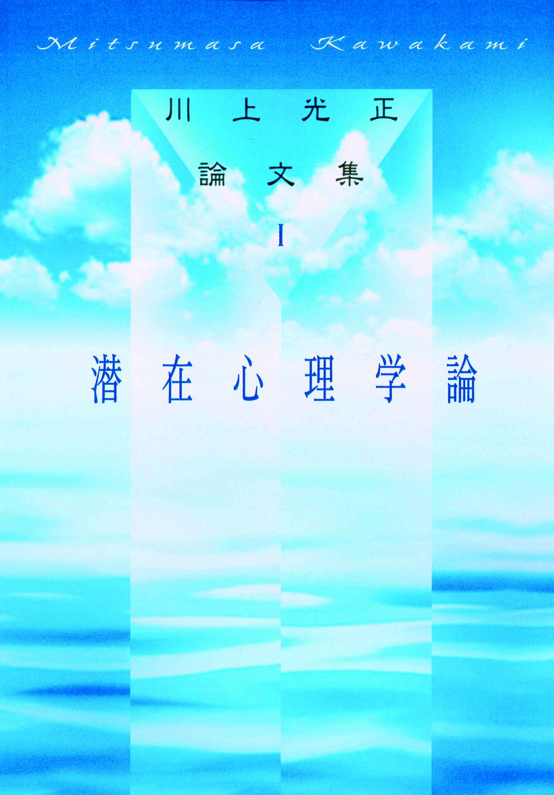
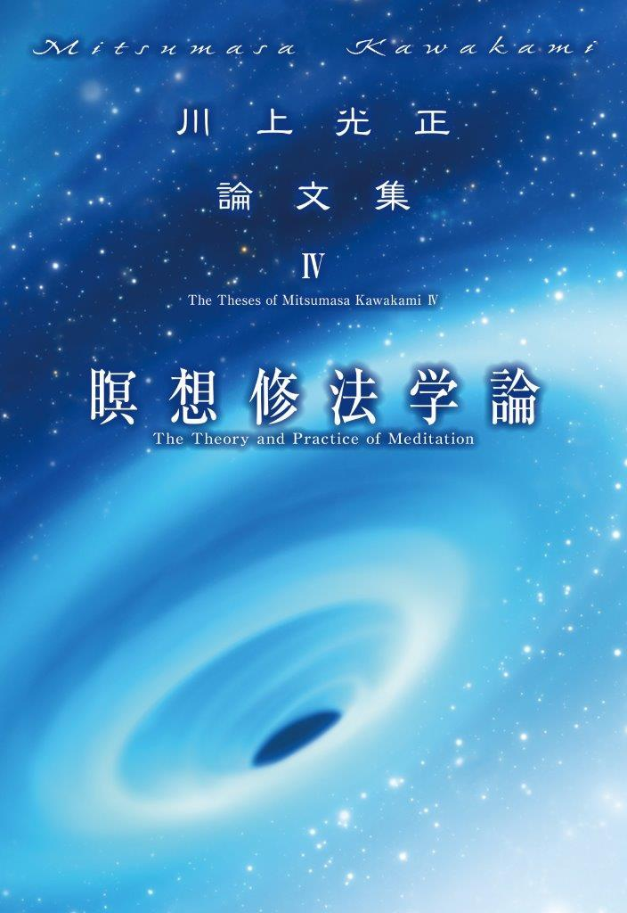
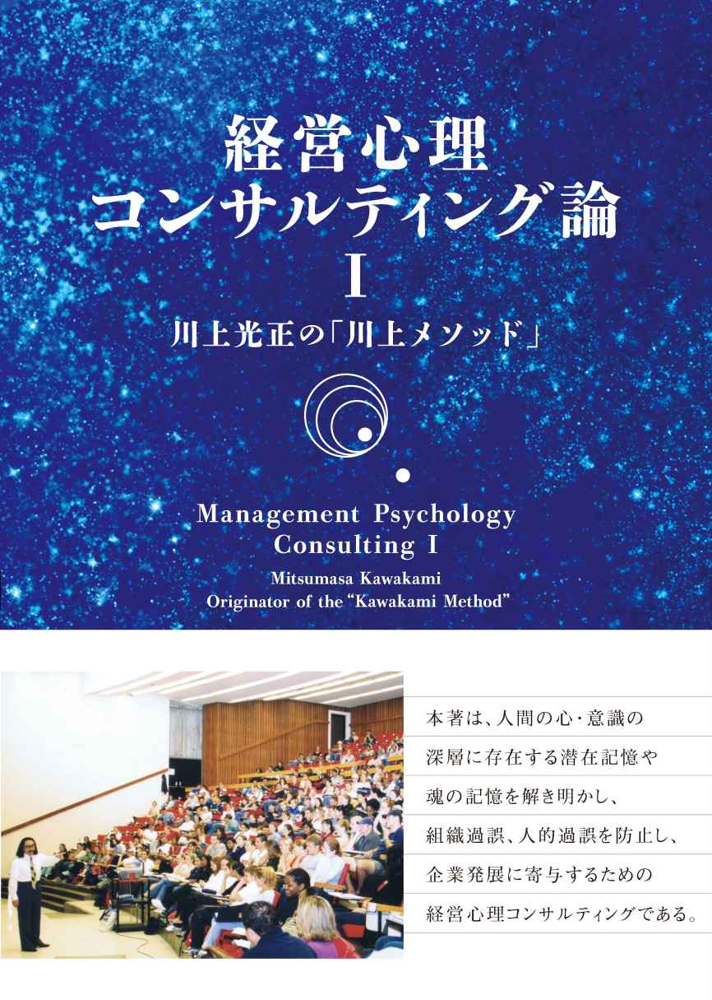

| 「心」のリーダー学 【４シリーズ】リーダーの精神哲学 | |
| 川上光正 | |
| e-anndoe- (2017) | |
■目次■
プロローグ
リーダーに求められる精神哲学とは何か
苛烈な自己変革が求められている
リーダーに求められる精神哲学
精神哲学の提唱
「心」のリーダー学
高次な目標、大きな志を持つ
ともに笑い、希望を語れるリーダーとなる
所有欲を捨て、モノに執着しない
余財は人の心と目をくもらせる
「私益」を「公益」に置き換える
廉恥の心を忘れず雅望をめざす
「足るを知る」生活を心がける
観察力を鍛える「ものさし」をもつ
心の絆づくりは観察力から出るひと言
困難なことほど実行する価値がある
リーダーが持つべき「宗教心」とは何か
リーダーは出処進退をきれいにする
才なくて徳あることを喜ぶ
奥義書『ウパニシャッド』が説く経営哲学
『アートマン（魂）は純粋の知
（prajnanaghana）である。』
（『ブリハッド・ウパニシャッド』 Brhad.Up.IV,5,13 ）
『アートマンは認識の主体である。
アートマンは把捉されず、
破壊され執着されることもない。
束縛されず、動揺せず、害されることはない。
それは不死である。』
（『ブリハッド・ウパニシャッド』Brhad.Up.IV,4,22 ;IV,5,15 ）
プロローグ
リーダーに求められる精神哲学とは何か
苛烈な自己変革が求められている
いま日本のリーダーは、苛烈な自己変革の必要に迫られている。
苛烈な自己変革とは、単にきびしく激しい変化をいうのではなく、各リーダーに突きつけられた抜本的で、かつ本質的な自分自身の変革を意味している。一刻の猶予も許されないほど、リーダーは自らを一変しなければならないとの認識である。
企業組織や企業のリーダーも、いまこそ自らを変革しなければならないという認識に対して、強く異議を唱える人は少ないだろう。経済界を見渡しても、さまざまな経済団体が現在の日本型経営の見直しを叫び、企業社会がもつ特有の「会社本位主義」からの脱皮を説いている。かつてバブルの絶頂期に"我こそ日本一"と傲慢なほど自画自賛していた日本型経営の百八十度の方向転換を余儀なくされた。
企業のリーダー自らが、こうした時代の流れを的確につかみ、従来の認識を一変させなければ、いまや企業経営は成り立たないというところまで追い込まれている。
だが、リーダーはいったい何を目指してどう自らを変えていけばいいのか。どのようなビジョンを描いてどんな目標設定をすべきなのか。その道筋、その姿が明確になっていない。目指すべきゴールがわからないでいるのである。
変革への意志はあっても、その意志をどう行動に結びつけていけばいいのかわからない。大荒れの海で羅針盤を失った船のような状態になっている。目的地はどこにあるのか。何を目指して舵をとればいいのか。われわれは、ほんとうに何を、どう変革すべきなのだろうか。
地球にやさしいとか、地域社会との共生とか、メセナ（文化貢献）とか、フィランソロピー（社会貢献）とか、あまりにも気楽に多用され過ぎたようだ。そんな気休めに似たキャッチフレーズの唱和はもうやめにしたい。企業が環境を重視し、文化事業や社会事業への貢献を考えることはもはや当然の常識として、その次元を超えている。真にリーダーが目指すべき変革の核心部分について深く考える時期にきたのではないだろうか。
いま、日本企業の多くはバブル崩壊以後の後遺症が続き、長い不況のなかで、リストラクチャリング（企業再構築）とか、リエンジニアリングとかに生き残りをかけて必死の取り組みをしてきた。その結果、職場環境は激化し、中高年の従業員が退職に追いやられ、社内競争は激しさを増すばかりである。
このような現状をどう打開すべきか、各リーダーは悩み苦しんでいる。
だが、と私は思う。もう目先だけの対症療法でお茶を濁してはならない――と。
景気が多少なりとも回復し、当面の利益が確保できれば、あれほど必死だった変革への意欲が失われてしまうかもしれない。要は単なる不況ではない。これまで日本が良かれと思っていた価値そのものが問われているのである。「安いものをドンドンつくり、売る」「大量生産、大量消費」――その裏に隠されていた短サイクル、大量廃棄による環境汚染、エネルギーの浪費、過労死やサービス残業に見られる劣悪な労働環境。一流企業の役員・企業ぐるみの悪質な不祥事。――そのほかいろいろな徒労。
そのすべてに対して、リーダーは責任を持ち打ち勝っていかなければならない。企業も単に利益をあげていればよかった時代は去り、それぞれの企業の存在理由とその理念が問われているのである。
時代は確実に企業の変革を求め、その責任を追及しだした。当然、リーダーや経営者はそれに応える責務がある。
本書は経営やマーケティングにかかわる諸問題に直接答えようとしたものではない。経済や経営の専門書でもない。あえていうなら、リーダーがもつべき心構えや姿勢・倫理・人生観や世界観、つまりリーダーはいかにあるべきか、生きるべきかを訴えた書である。リーダーの意識・心のあり方と哲理を問うた書ともいえよう。
リーダーの意識を変えることが、企業組織を変えることである。リーダーの意識を高めることが、企業活動の質を高めることである。意識を軽んじてはならない。ひとりの意識の変革が企業それ自体さえも変えていく。そして、その意識変革のバックボーンは精神哲学でなければならない。
精神哲学とは、人間存在の本質を形成している真理を探究することである。人間が本来、備えるべき、また、生きていく過程で形づくっていかなくてはならない精神の哲理。それなくしては人間が成り立たない精神の根源、核としての魂（アートマン）である純粋精神と梵（ブラフマン）としての宇宙真理を学ぶことでもある。
精神哲学は何もリーダーにのみ必要なものではない。すべての人間が持つべきものである。ただ、経営者やリーダーは、一般の人たちよりもっと厳しい形で、もっと純粋な形で、精神哲学を理解し認識することが要求されるのである。
知は哲に立脚すべしとは、インド哲学の枢要である。哲の裏打ちのない知は虚しいもの。哲とは、賢明で物事の道理や根本原理に明らかなことでもある。己の中に精神哲学を持たないリーダーも虚しい存在であろう。
「リーダーは精神哲学を持て」――本書の主題はそこに収斂される。
リーダーに求められる精神哲学
リーダーの資質はと問われれば、いかようにも答えが出てこよう。
統率力、洞察力、観察力、直観力、折衝力、主知力、先見性、公平無私、責任感と使命感、率先垂範、大局観、明朗闊達、豊かな知識と見識、徳望と信用、質実さ、合理性と精神性、公益性、謙虚さ、慈善と博愛心、自信と勇気、気力と体力、そして健康と、まさにきりがない。
書店に行けば、リーダーや経営者のための啓蒙書や経営・マーケティング論の専門書は山のように積まれている。そのどの本をとっても時代の先端を行く経営理論や時代を切り拓くマーケティング理論が展開されているに違いない。本を読み勉強することは大切だし、リーダーこそ努力し汗をかかなければならない。それはわかる。
だが、ここで言いたいことは、自分自身を見つめ直し、自己の存在を自覚することである。時代を読み、動向を知ることは大切だが、まず私は「心を滅し自己の内面を見つめてみては」と言いたい。そして「己の魂の存在や因果律・カルマを知らなくてはならない」と言いたい。
変動する経済状況に右往左往するのではなく、心を定め、大船に乗ったつもりで舵をとっていただきたい。波瀾もまた楽し――の境涯になっていただきたい。それがリーダーに求められている大切な資質であると思う。
幸運のときもあれば、不運のときもある。それが人生だが、その不運のときでさえ心が定まっていれば、なんの迷いもない。恐いのは周りにふりまわされ、不安や恐れ、不信、疑心、憎しみ、悲しみの意識に支配されてしまうことである。
それこそが不運へと向かう悪意の感情である。
その悪意の感情である混濁意識は自己の魂を傷つけ、悪因苦果の因果律となる。これは自明のことだ。そうならないためにも、常に前向きに楽しく、明るくしたい。心を強くもって真の愛と正義を実践して欲しい。人を導くリーダーや経営者はなおさら『ウパニシャッド』にある精神哲学とヨガ・瞑想の実修に励んでいただきたい。
精神哲学の提唱
私自身、インド最古の聖典・奥義書である『ウパニシャッド』を座右の書とし、実践している。
『ウパニシャッド』とは、紀元前八世紀にさかのぼる古代インドで著された哲学書の総称である。最初期の『ウパニシャッド』は仏陀が生まれる数百年前に成立したと伝えられている。『ウパニシャッド』の〝ウパ〟とは「近く」の意であり、〝ニシャッド〟とは「坐る」という意で、弟子が師匠の近くに坐って、師から弟子へ口伝されたことを表すとされる。そしてもうひとつ『ウパニシャッド』には「奥義」「秘儀」「秘密の教え」という意味もある。
『ウパニシャッド』はその名称通り、主に対話形式で師から弟子に、バラモンからマハラジャに秘密の奥義を伝授するという対話形式をとっている。その対話によるテーマは、宇宙の根本原理や輪転再生、解脱、プラーナ、アートマンとブラフマン、絶対者など多岐にわたり、その内容は輝かしいインド精神文化の源泉として不滅の価値をもっている。
インド文化の影響を受けたとされる文学者、哲学者、芸術家の名を挙げてみると、ゲーテ、ヘルダー、ショーペンハウアー、ワーグナー、ニーチェ、マックス・ミューラー、カイゼルリンク、ヘルマン・ヘッセなどがすぐに思い浮かぶ。なかでもショーペンハウアーはウパニシャッド哲学の影響を強く受け、『ウパニシャッド』のラテン語訳『ウプネカット』を読んでいたく感動し、「地上にありうる最も有益な書」と絶賛したことはあまりに有名である。
彼は、『この一行一行がじつになんとかっこたる、明確な、徹頭徹尾調和のとれた意義にみちみちていることだろう。各ページから、深い、根源的な、崇高な思想がわれわれに向かってくるが、全体のうえに高い神聖なまじめさが漂っている。ここにはインドの空気と、根源的な、自然に順応した生存とが息吹いている。ここでは、精神が、つとにそれに注入されたユダヤの迷信と、これをありがたがっているすべての哲学とをきれいに洗い去っている。』と述べている。私も、今その思いを同じくしている。
『ウパニシャッド』を読めば読むほど、その深遠な内容に感動するのである。しかし、その内容が必ずしも理解しやすいかといえば決してそうでもない。
ヨガと瞑想を通し、至福の意識状態を経験し、超越的体験をした人にしかその本質は理解しにくい。明らかに通常の言語表現を越えた何かを行間から感じとることが多いからである。
『ウパニシャッド』が説く真髄は、ブラフマン（梵＝宇宙真理）とアートマン（魂＝純粋精神）という一対の概念にその本質があろう。
簡単に説明すると、ブラフマンが宇宙に存在するすべて――目に見えるもの見えないもの、顕在的なもの潜在的なもの――に及んでいると考えており、それが個人の内に反映したものがアートマンである。人生の究極の目的は、このブラフマンとアートマンの合一・融合であり、このことをリアライズすることが人間完成を目指す悟りへの道であり、この悟りに至るまでの過程をヨガと言っている。ヨガという言葉は、英語のヨーク（くびき）と同一語源でアートマンとブラフマンの合一・融合を意味している。
ハタヨガによるアーサナを実践し、自らの身体を鍛錬すると不思議と意識や考え方に変化が現れる。それは観念ではなく実感である。自己を見つめる楽しさを味わい、自己を見失うイライラや他人への嫉妬、憎しみが消えていく。
精神的なラージャヨガでは対象瞑想から、深い静寂の有想三昧に入ると心の安穏が得られる。さらにクンダリニーヨガ、調息瞑想の実修によって無想三昧へと意識が深化し、自己の中でブラフマンとアートマンの合一・融合を果たすことができる。それは宇宙意識領域にある至純意識から神性意識、至梵意識、そして宇宙真理を体感し認識することでもある。
私がここで言う、自己変革とは、意識の創造的深化をさしている。
本書は、リーダー、経営者に不可欠な創造的自己変革と精神哲学・ウパニシャッド思想を提唱する書であり、生き方や迷い、不安を解放するための叡智でもある。さらに、生き残りに必要な〝超然の発想〟を展開するための案内書とも言える。その両意を読みとっていただければ幸いである。
平成九年九月 著者
※本電子書籍は、一九九七年に出版された『リーダーの精神哲学（第一刷）』に基づき、四シリーズの電子書籍版として制作されました。

『じつに夫を愛するがゆえに、夫が愛しいのではない。
アートマンを愛するがゆえに、夫が愛しいのである。
じつに妻を愛するがゆえに、妻が愛しいのではない。
アートマンを愛するがゆえに、妻が愛しいのである。
じつに子を愛するがゆえに、子が愛しいのではない。
アートマンを愛するがゆえに、子が愛しいのである。
じつに富を（vitta）を愛するがゆえに、富が愛しいのではない。
アートマンを愛するがゆえに富が愛しいのである。』
（『ブリハッドアーラニヤカ・ウパニシャッド』Brhad.Up.IV,5,6）

高次な目標、大きな志を持つ
三十八年前（一九五八年 当時）、私は初めてヨガと出会った。
それ以前に行なっていたボディビル・ウエイト・トレーニングの雑誌にヨガや瞑想について書かれていたのを読んだのがきっかけである。
最初のうちは何もかも手探りであった。座法、呼吸法、瞑想法など、すべて外国雑誌に掲載されていた記事を訳したりしながらその実修法を、一つ一つ忍耐強く身につけていった。
私はヨガの魅力にとりつかれ、ポーズだけでなくその教義や哲学の本質を理解したいと思った。クンダリニーヨガと瞑想の果てにやってくるというアートマン（魂＝純粋精神）とブラフマン（梵＝宇宙真理）の合一・融合、すなわち梵魂一如の境地、それを何としても実現したいとも考えた。そしてヨガの本質をなんとしても極めたい。それを人生の目的と決め、インドに再三渡り修行に励んでいた。
当時の私には、高すぎる目標、大きすぎる志であったかもしれない。しかし、今ではその目標である梵魂一如の境地を感じとることができた。つねに、「まだまだだ。この程度のことで満足するな。最終目標までの道のりは長い」と自分を高次な目標、大きな志に向けて鼓舞してきたからである。
札幌農学校で内村鑑三、新渡戸稲造といった偉大な教育者を育てたクラーク博士の、「少年よ、大志を抱け」は、あまりに有名な言葉だが、人生を生き抜くうえで志を立て、目標を持つことは極めて大事なことだ。それも、若いうちに高次な目標を設定することを私はすすめる。
高すぎる目標、大きすぎる志では実現できないのではないか――そう考えるのはもっともだが、しかし実は、目標に達するか志が実現できるかは第二義的な問題にすぎない。果たせなくてもよいのである。
肝心なことは、結果より経過である。クラーク博士の教え子たちが政治家や財界人でなく、一種の啓蒙家、人格者になったことに注目してもらいたい。つまり、目標や志は、それを果たそうと自覚し意識するプロセスが大切で、その人の〝人格〟〝人間性〟を磨くのである。それが叶えられれば、実は、最初の目標が達成されなくとも、その人の人生は成功だったのである。
大切なのは目標を達成することでなく、それに到達しようと力を尽くす過程にある。そのためにも、志は大きいほうがいい。
「棒ほど願って針ほど叶う」という諺がある。目標は高くかかげてこそ、その目標に近づくことができる。最初から低い目標を設定したのでは、たとえ達成したとしても小さなものしか得られない。
経営の目標もなるべく次元を高く設定したほうがいい。
私が、これからの企業は地球環境のことも視野に入れるべきだ、リーダーは精神哲学をもつべきだ、と述べると、「主旨はわかりますが、理想と現実の開きがあるのでは・・」とかたづける人もいる。正しいが、目的としては現実的ではないというわけだろう。
しかし、それは違う。もっと儲けたい、名誉を手に入れたいといった欲望はなるほど現実的で人を動かしやすい。だが反面、現実的な欲求に人は必ずある種の後ろめたさを覚えるものである。その、どこか後ろ暗い感情が実は、物事を達成しようとする情熱やパワーを減少させてしまうのだ。
人間はよくも悪くも、理想論を必要とする動物である。多少、建前論であっても、誰が聞いても恥ずかしくない高次な目標を堂々と公言できれば、そのために迷いなくいつしか力を発揮していける。つまり、高次なところに経営目標をおいたほうがよいのである。
リーダーが大きな志を持つことが会社にとって何か弊害になるだろうか。
答は否である。むしろ好影響が多い。リーダーがつねに高次な目標に向けて己を研磨していれば、その姿勢は、それを見ている部下たちにもかならず伝播していく。それは、部下たちを引きつける吸引力も持つ。
その結果、企業も組織も人も、その「格」が磨かれていくのである。
ともに笑い、希望を語れる
リーダーとなる
黒沢明監督の名作『七人の侍』。お百姓を助ける七人の侍のうち、まっ先に命を落とすのは、千秋実という俳優が扮した、明るくて冗談好きで楽天的な男である。
その死に際して、志村喬が扮する侍のリーダーがこうつぶやく。
「これから戦いが苦しくなる。苦しい時にこそ、あの男の明るさが必要だったのに・・」組織の長に必要な人間性のひとつに「明るさ」と「ユーモア」がある。どんなに苦しい局面でも、明るく笑って、希望を捨てない楽天性――それがリーダーに不可欠な条件である。
ホンダがまだ、浜松の町工場にすぎなかったころ、故本田宗一郎氏はいつも社員に向かって「世界一のオートバイメーカーになろう」と語りかけていたという。
社員はその夢物語に苦笑するほかはなかったが、心のどこかで、「この人なら本当にそれを実現させるかもしれない。この人についていけば夢が現実になるかもしれない」と、一筋、その可能性を信じていたそうである。
リーダーはつねに希望を抱き、明るく夢を語ること。その夢に向かってビジョンを描きプロセスを示してやること。それは、未来に向けて前向きに成功の確信に満ちており、「きっとやれる。成せば成るぞ」と陽気に公言できる。
また、逆境のときや苦しいときに、「なぁに、苦あれば楽ありさ。俺も必死にやるから、みんなもここでがんばってくれ。明けない夜がかつてあったためしはないよ」――そう部下を慰め、励ませるリーダー。
こういうリーダーは部下にも希望と確信を持たせ、彼らの気を鼓舞する。組織メンバーの精神的支柱となり、彼らの力を結集できるのである。部下というのは、実にリーダーの顔色をよく見ているものである。リーダーがしゅんとしていれば組織全体が意気消沈してしまうし、リーダーが弱音を吐けば、部下はああダメなのかと思う。リーダーが暗い顔をしていればみんな陰気になるし、リーダーがくしゃみをすれば全員カゼをひいてしまう。そういうものなのだ。
だから、私はいつも門弟やスタッフに言っている。
仕事場へ来たら、いちばんに大きな声であいさつをしなさい。人と会ったら、相手から声をかけられる前にこちらから明るい声で話しかけなさい。下腹に力を入れて声を出し、互いに励まし合って仕事を進めなさい。帰り際には「お疲れさま」は絶対口にしてはならない。
「お疲れさま」とあいさつ代わりに毎日言っていると、それがいつの間にか仕事の失敗の言い訳にもなる。仕事をすると疲れることが当たり前になってしまう。疲れる仕事は結果的には良くない。仕事が楽しければ、疲れも少ない。成果も上々である。帰りのあいさつは「頑張ってますね、お先に失礼」と明るい声を残して退社すべきである。
苦しい思いや悲しいことがあり、泣きたい時は、思いっきり泣いた後、笑顔をつくりなさい。苦しい時こそ楽しいことを考え、それを口にしなさい――と。
多少の無理があっても、空元気でいいから、そのように実行する。そうしていくうちに、本当にその気になってくる。自分の中に明るく楽天的な気分がわき、それは人にも伝播していく。そのことが困難を可能にする心のエネルギーになるのだ。
リーダーの楽天性は、組織や集団が事を成す上で実に大切な要素なのである。
明治四三年、南極探険のプランを発案した白瀬中尉はほとんどの人から反対され、奇人扱いされたが、たった一人、「それは面白い」と賛成してくれた人がいた。
明治のリーダーの一人、大隈重信である。しかし、大隈は確実な成算があって賛成したわけではなかった。出発間際、白瀬に向かって、
「南極は暑いから気をつけろ。南洋でさえあれほど暑いのだから、さらに南の南極の暑さはよほどのものだろうから」と大マジメに言ったとか。
まるで笑い話だが、しかし、リーダーのこうした底抜けの楽天性は得がたい。どれほど部下を元気づけるかしれない。
楽天的でユーモアがあり、共に笑い、共に喜び、共に希望を語り合えるリーダーが今、求められる。
所有欲を捨て、モノに執着しない
子孫のために美田を残さず――とは維新の英雄・西郷隆盛の言葉だが、西郷は次のようにも言っている。
「命もいらず、名もいらず、官位も金もいらぬ人は、仕末に困るものなり。この仕末に困る人ならでは、艱難を共にして国家の大業は成し得られぬなり」
所有欲のない人ほど強く、また信頼できる人はいないということだが、西郷自身もこの言葉どおり、権力も地位も絶大なものでありながら、およそ身辺を飾らず、上野の銅像のように粗末な薩摩絣に兵児帯姿で一年を過ごし、死ぬまで質素な暮らしを通した。
ヨガの教義にも、モノを所有するなかれ、モノに執着するなかれという教えがあり、無意味な我欲、所有欲を戒めている。
モノへの執着心は必ず我欲に通じ、エゴや歪みを生み、魂を濁らせ、誤った道を歩ませるからである。
経済界にも、引退後も地位や既得権を手放すまいと、できれば背後から「院政」を敷こうとして、「代表取締役相談役」とか「代表取締役名誉会長」などという奇怪なポストをつくり出して影響力を行使している人がいるが、これなどは「引き際を誤った」よい例だろう。モノに恬淡とし、所有欲を心の中から閉め出すこと、それが指導者や人の上に立つ者の重要な心がまえの一つである。
私もずっと前から「解脱する時期がきたら私有財産は一切持つまい」と決め、所有欲を少しずつ捨てることを決意した。そう決意して以来、私はヨガの瞑想中にしばしば、宇宙真理（ブラフマン）と自己の魂（アートマン）の合一・融合を可能にする純粋意識が湧き出てくるのを感ずるようになった。一つの欲から離れることは、己の魂を浄化し意識を高次にすることになるのである。
しかし、何も持たぬ人が、欲を捨てよ、と説いても、貧しい人が「お金がすべてではない」というのに似た、説得力の不足を感ずるかも知れない。
私は三十代から四十代前半にかけて、家や土地など私有財産を所有していた。昭和五十七年の福岡県・高額所得番付表の八百番に名を連ねたこともあった。しかし、それは生きるのにかならずしも必要なものではない、魂の幸福と平穏を得るためにはむしろ障害物となる、と悟った。今ではそれを門弟に分配したり、私が理事長をしている育英財団の基金として、「公」のものにするよう努めてきた。一度、所有してみて、やはり所有欲というのは究極的には空しいものであると悟ったからである。
「私有」のものは一つもなくその一生を終える。それが私の理想とするところである。金財のみならず、権力も権威も不要。ただ、門弟や実修生の集まる修行農場・アシラムの一角に小さな個室を貸してもらい、そこで精神哲学の研究や執筆、瞑想、読書にふけり、訪れる人たちと歓談、清談するのがささやかな希望である。
モノというのは、実は、所有するよりも、所有したものをあえて手放すことの方がむずかしい。西郷隆盛は征韓論に敗れるや、潔く、あっさりと要職を捨てて鹿児島の野に下った。既得権を手放すのにいささかの躊躇も見せなかった。
このような恬淡として物事に拘泥しない潔さを、現代のリーダーも見習いたいものである。
余財は人の心と目をくもらせる
一九八六年二月、当時のマルコス大統領が追放されたフィリピンの革命のときに、マラカニアン宮殿の内部がテレビカメラによって克明に映し出されたことがあった。
イメルダ夫人の衣装や靴を保管する専用の部屋まであり、権力者の住居はそれは広大で豪華、贅を尽くしたものであった。もちろん、寝室も豪華で、ベッドは天蓋つき、ビロードのカーテンのようなものがめぐらしてあったと記憶する。
だが、その状況を見ていて私は思った。どんなに栄耀栄華を誇る権力者といえど、ベッドの大きさはせいぜい畳二畳ほどにすぎない。位人臣をきわめた人間であっても、横になって寝るスペースは三十坪も五十坪も必要とするわけではない、たった畳一枚か二枚の空間があれば、それで事足りてしまうのである。財や贅も眠りの中までは持っていけないのである。
また、世界の要人の葬儀の様子を見ても、その柩の大きさは一般の人の場合とあまり変わらない。偉人、要人といえど、その財や地位に見合う大きな棺桶を必要とするわけではない。これまた、死後の世界へ現世の財産を持っていけるわけではないのだ（心の財産は別である）。日本の俗言に「立って半畳、寝て一畳」というのがあるが、人間はしょせん我が身一つで生まれ、死んでいくものである。一日の終わり、あるいは一生の終わりに横たわる空間の広さは、誰しも等しく畳一畳、せいぜい二畳である。だとしたら、現世で手にした財にいったいどれほどの意味、価値があるか。
そう悟ることは凡人にはなかなか難しいが、人の上に立つ者にとって、欲が少なく財に対して恬淡とした態度は身につけてしかるべき資質である。
「財集まらざるは恥なり、財集めてこれを己のものとするはまた恥なり」という言葉もある。
財というものは、集めようとして集まるものではない。その人間に善の因果律と徳があれば自然に集まってくるものだ。財は末で、人間の徳性<業>こそが根本のものである。それなのに財を集めるのにあくせくして、自分の徳を汚してしまう人がなんと多いことか。
古来、日本の葬儀では、棺桶に六文の銭を入れる習俗があった。これは三途の川の渡し賃が六文といわれたことに由来する。つまり、あの世へ持っていける財はたった六文にすぎない。そのために徳を汚してしまうことは、実に愚かなことである。
日本の企業では、役員室や社長室はたいていビルの上階にある。ところが、これを二階の玄関上に移したある会社の社長がいる。
上にいると、専用のエレベーターを使い、部下を自分の部屋へ呼びつけるようになる。営業部や総務部などへ下りていって、見回ることもめったになくなる。社員との接触がほとんどなくなり、人の上にいて、部下を見下ろすことに慣れ、彼らの心情や苦労がいつの間にかわからなくなってしまった。
そこで、社長室を二階の玄関上に移した。窓からは社員の出入りが見え、彼らの騒めきも耳にできる。彼らの様子を垣間見、彼らの日頃の喜怒哀楽にふれることもできる。社員の心を掌握するには、彼らの心をまず理解できなくてはならない。階上におさまりかえっていたのでは、それはわからない――その社長はそう語っていた。
地位は知らぬうちに人を傲慢にする。財もこれと同様。過剰な財は人の目と心をくもらせ、徳を汚し、真理から遠ざけるのである。
「私益」を「公益」に置き換える
あれを手に入れたい、これが欲しい。人間の欲望には限界というものがない。
しかし、欲望が成功を呼ぶケースもある。自分の望むものになりたい、なんとか物事を成就させたい、そういう願望や欲望に向かってまっしぐらに進むことが成功の要因となるからだ。強い情熱が成功への王道となるわけだ。
一方、欲望というものは、政財界のスキャンダルに明らかなように、結局は道を誤らせその人の身を滅ぼす。情熱は成功を呼び、欲望は失敗に通じる。いずれも「～したい」という願望から発しながら、この二つを分かつものは何か。
そこに、己を利する心があるかないか。その願望が自分の利益を図る心、自分の情実を優先する意図から発していないか、それが欲望と情熱の違いであり、失敗と成功を分ける鍵となる。
己の利益を優先させる欲望も人を動かす要因となるが、目的のためには手段を選ばずで世の中の常識や道理に無感覚になり、敢えてそれに反してまでも、強引に成功への近道を歩もうとする。そのため、うわべの成功をつかむのは早いかもしれないが、その成功は長続きしない。結局は失敗に終わる。
業者から多額の金品を受け、その金でマンションや別荘、高級車を買って自分の欲望を一旦は満たしても、やがて事が発覚して収賄罪で逮捕――欲望の行き着く果ては、大方こんなところである。
これに対して、純粋な情熱や熱意は、一見迂遠だ。努力してもなかなか結果は出ないし成果もわずかずつ積み重ねていくしか方法がない。まだるっこしく、じれったい。だが結局は、この遠い道が成功への最も近い道であり、成功を永続させる方法でもあるのだ。
失敗は早くやってくるが、成功は極めてゆっくりしかやってこない。また、ゆっくりやってきた成功にしか本当の価値はないものなのである。
とはいえ、「無私」であることはむずかしい。人間が完全に私利私欲を離れるということは困難なことかもしれない。
だから、と私は考える。利益を図る心をせめて自分でなく、組織や社会に向けるべきではないか。自分のためでなく、会社や会社を支えてくれる人たちのために「利」を図ろうと考えることが大切ではないか。むろん、これだけでは不完全だが、さしあたって、私利の心を薄めるのには有効な方法であると思う。
「公欲」に目覚めれば、「私利を小に公欲を大に」と、自らの考えが自然に変化するのである。
つまり、私益を「公益」に置き換えることで、欲望の質を高め、慈善と博愛の精神をもつ純粋な情熱に変えていくわけだ。
リーダーの願望が「私」を離れ、「公」へ向かうものであれば、それがいかに困難であっても部下はついてくる。しかし、リーダーの掲げる目標・目的がいかに高尚であってもそこに少しでも私欲が混じり、自分だけの利益を図ろうとする姿勢が垣間見れれば、部下は従う意欲を失う。たとえ、高額な報酬を約束しても、そのリーダーを尊敬することはできないものだ。
『エミール』を著し、文明のあり方に疑問を呈して、〝自然に還れ〟と主張したフランスの作家であり思想家であるルソーは、「十才のときは菓子に、二十才のときは恋人に、三十才のときは快楽に、四十才のときは野心に、五十才のときは貪欲に動かされる。人間はいくつになったら、叡智のみを追うようになるのであろう」と述べている。
悲しいかな、人間の欲望には果てがない。だからこそリーダーは、少しでも「私利」「私欲」を捨て、その分「公利」「公欲」をもつよう努めなくてはならない存在なのである。
廉恥の心を忘れず雅望をめざす
ずいぶん前に話題になったことである。
某有名製紙会社のトップは毎年のように高額納税者番付で上位を占める資産家。以前、まだバブル経済華やかなりし頃に、世界的に有名な名画を個人的に買い入れて、海外でもそのリッチマンぶりが評判になった。
しかし一方で、この人が率いる製紙会社は二期連続で経常赤字を計上して、経営再建のてこ入れが急務の状態だった。そこで、この会社はほぼ百億円という莫大な再建資金を株式の第三者割当増資によって調達することになった。ところが、この新規発行の株式を当のこの人物が引き受けることになったのである。
自分が会社を設立して大きくした。その会社を通じて自分も潤った。ところが自分が潤ったために会社がやせた。やせた会社を救うために自分の資産をはき出した――いわば、そういうなりゆきだが、滑稽な悲劇というか笑えない喜劇といおうか、因果はめぐるといおうか、自分の欲のつけを結局、自分で払った自業自得のケースである。
一方、ある地方の住宅建設会社の社長は経営能力もさることながら、人間的魅力に満ちた、誰もが認める人格者で私欲がない。なにせライバル会社の人たちから、「あの人の会社こそ大きくなってほしい」と願われているほど。そのせいで、この会社は順調に成長しているという。
会社を大きくしたいという気持ちを「公欲」と名付けるとすれば、前者は私欲を追及するあまり公欲をおざなりにし、後者は公欲に徹して私欲が消えた例といえる。
業種とか経営規模は別にして、この二人に経営者の〝人間性〟というか姿勢の差は、はなはだ大きいといわねばならない。経営者である以前の、人間としての「品格」の差だろう。
P・F・ドラッカーは経営者が備えているべき人間性について、
「経営者がなさねばならない仕事は学ぶことである。しかし、経営者が学び得ないが、どうしても身につけていなければならない資質が一つある。それは天才的な才能ではなくて、実はその人の品性なのである」と、経営者に必要な人間的資質として品格をあげている。
品格は何から醸し出されるか？ 無私と廉恥の心であろう。廉恥とは心が清らかで恥を知る心、利己的で反社会的な生き方を恥ずかしく思い、おのずとそれを戒める心である。廉恥の心を失えば、公欲よりも私欲を優先させて平然としていられる破廉恥漢に堕してしまう。
しかし、現代の日本、政治家から財界人まで、いかに恥を知らない、したがって品性のかけらもない人々が多いことか。人間だから時にはあやまちを犯すこともある。だが、あやまちを犯して、ああ、自分は悪いことをした、強く戒めなければと自省する心がきわめて希薄である。そこに、日本の社会の病巣の深さ以上に個人が持っている因果律としての業・カルマがあるからではないか。
長い間、政財界の要人の精神的バックボーンとなってきた故・安岡正篤氏がこう言っている。
「経営者は欲望の満ちる社会を生き抜きながら、とどのつまりは雅望に生きることです」
雅望とは雅欲、つまり、私欲や公欲のさらに上に位置する高度な欲望のことだろう。私や会社という枠を越え、社会や地球への還元、貢献へと向かう正しい「欲望」のことだ。
その雅望を志向したときに初めて人に品格が備わるのである。
「足るを知る」生活を心がける
人間の欲というのは、「程度」というものを知らない。一億円手に入れたら十億円欲しくなるし、十億円懐に入ってきたら、次には百億円欲しくなるものだ。ところが、以前、テレビでインドネシアのある小さな島の島民の暮らしぶりを紹介していたが、感じるところ、学ぶところが大変に大きかった。
そこは赤道直下の耕作地に乏しい小さな島で、そのため島民のタンパク源の大半は、夏に姿を現すマッコウ鯨に頼っている。たいへん貴重な食料だから、獲れるときにできるだけ捕獲してストックしておこうとするのが通常の〝経済観念〟というものである。少なくとも日本人ならそうするだろう。
ところが、そこの島民は年間に十頭くらい、住民全員がギリギリ必要とする分だけを確保して、それ以上は獲ろうとしない。需要分に見合う量があれば、それで満足なのである。以前はそれでも、近代的な捕獲法によって大量捕獲していたこともあったらしいが、必要以上の量を獲っても結局、鯨の絶対数を減らして、自分たちの首を絞めるだけだと気づいて止めたという。今では廃船となったその近代的な捕獲船が砂浜に打ち上げられているシーンが画面にも映っていた。
つまり、必要以上に獲らない、必要量あればそれで自足して、それ以上は望まない――「足るを知る」ライフスタイルを貫いているわけである。
ここには、日本人が忘れてしまった生活態度が生きていると思った。
地球資源の確保に関連して、動植物の乱獲が世界的な問題になっている。捕鯨問題も政治的思惑までからんで、なかなか結論が出ない。私自身いわゆる「肉食」はしていないが、それについては反対も賛成もしていないし、人に「肉を食べてはいけない」と強制するつもりはない。生態系の中で、人類が生きていくために動物を殺して食料にすることは、ある意味でやむを得ない場合もある。イヌイット（エスキモー）がアザラシを狩猟するのは、生存のためのギリギリの行為、選択なのだろう。だが、それだけに過剰な殺生はしない。インドネシアの島民と同じように、必要以上は殺さないのである。
自分たちの生存に必要な大切な食糧を乱獲することは、すなわち自分たちの生命を脅かすことだ。この単純な事実を彼らは自然の生態系の中に生きることで、おのずと熟知しているのである。
そこにあるのは、動物や自然との「共存共生」の思想であり、自然の一方的支配ではない。日本人をはじめ、あらゆる文明人は、自然は支配、管理するものだ、できるものだというおごりをいつの間にか身につけてしまった。食糧だけでなく毛皮や飾り物のためにも動物を殺すというのは、明らかに無益、無意味な殺生であり、人間の越権行為である。
このおごりを戒めるのが先述した「知足」、すなわち「足るを知る」哲学であると私は思う。
分相応をわきまえて、必要以上を望まない。自然から与えられた恵みで自足して多くを欲しない。この「足るを知る」ライフスタイルこそが、ともすれば限りなくふくらんでいく人間の欲望を抑制する最良の方法である。
「欲しいものが手に入らないときは、手に入れられるものを欲しがれ」と、西洋の賢人も言っている。それが人間の叡智というものではなかろうか。
観察力を鍛える「ものさし」をもつ
私は鞄やポケットにいつも「巻尺」をしのばせている。そしてたとえば、教室の家具などを購入するときには机やキャビネットの幅や奥行きを巻尺をとり出して実際に測ってみる。店員がもの珍しそうに見ている、そんな測定癖がある。
巻き尺を持っていないときは、掌を尺取虫のようにしてモノの長さを測ることもある。大きなモノは両手を横いっぱいに広げてそれを〝ものさし〟がわりにする。そのため、両腕を広げたときの長さは一八十センチ（身長より十センチ長い）、親指と人差し指を広げると二十センチと知っている。
また、そうした〝ものさし〟を使わなくても初対面の人と会ったときなどに、その人の身長、体重、肩幅、胸囲など各サイズを目分量で推し量ることもよくある。
「あの体格、身長からみて体重は六十五キロくらいか」と見当をつけるのである。この〝目のものさし〟にもあまり誤差はない。
この測定癖は趣味でも粋狂でもない。
モノを測定することは物事の観察力をきたえることに通じる。あるモノの形状、大きさを測定することは、その対象の性質や本質を観察することに他ならないのである。
その対象が「人間」であっても同じである。ある人の顔、表情の変化、しぐさ、ふるまいをじっと測定しているとその人の人となり――性格、資質、能力、環境などが次第に見えてくる。
３年前、メル・ギブソンが主演する「マーヴェリック」という凄腕のギャンブラーを主人公にした映画を鑑賞したが画面から伝わる彼の観察力に興味深いものがあった。
ポーカーゲームをするのだが、最初の一時間半はまったく勝てない。だが、その間にプレイヤー全員の癖をつかんでしまうのである。いい手ができた時の癖、掛け金をつり上げる時の癖、絶対に勝てる手ができた時の癖などを、相手のチップの置き方や表情、カードのいじり方などで把握してしまうのである。
そしてその後は連戦連勝・・・。
イカサマは絶対にしないというポーカープレイヤーの彼は、「条件はどっちも変わらない。要は観察力だ。相手の癖を見抜いたら勝てる。それが勝利の秘訣だ」という。相手の癖を盗み合うポーカーゲームの醍醐味を観察できて、なかなか面白かった。
ともあれ、観察とはまず測定からはじまる。観察力は判断力の〝ものさし〟〝尺度〟となり、それが洞察力を養うのである。
豊臣秀吉がのちに彼の参謀となる石田三成を見出したとき、三成はまだ寺の小姓であった。あるとき、秀吉が茶を所望すると、少年の三成は最初にぬるめの茶をたくさん、二杯目は熱めのものを七、八分目、三杯目はさらに熱い茶を少量持ってきた。
これをじっと観察していた秀吉は「この小姓、使える」とその才覚を見抜いて、城にとり立てたという。最初はのどが乾いているから、すぐにたくさん飲めるようにぬるい茶を大量に持っていき、しだいに熱く少なくしていった三成の機転を秀吉は買ったのである。要するに、雑用をどうこなすかでその人の能力はかなりの程度推し量ることができる。
物事や人の本質は案外、目に見えるところで測れるものなのである。測定力、観察力が洞察力に通じるとは、そういう意味でもある。
リーダーや経営者はさまざまなことで、つねに決断を迫られている。決断――これはよし、あれはダメ、物事の是非、善悪を決めるためには、自分の中に「判断力のものさし」を持っていなくてはならない。その「ものさし」をつくるのは日頃の観察力なのである。
心の絆づくりは
観察力から出るひと言
私の観察癖は実は子供時代からのことである。
小学校五年の時、担任の先生から、
「これを本当におまえがつくったのか？」
と疑われるほど精巧な鳥籠（目白カゴ）をつくったことがあるが、その製作方法を私は誰からも教わらなかった。
ただ、学校からの帰り道、近所に住む青年が目白カゴをつくっている過程を、あきもせず、一時間でも二時間でもじっと眺め、観察していた。材料となる竹の削り方、曲げ方、接着法、組み方――それらを穴のあくように見つめ、頭の中に焼きつけて、家に帰ってその通り再現していく――その方法をくり返しただけである。
それで、大人たちから「わしにもつくってくれ」と注文がくるほど精巧なカゴができあがったのだから、自慢するわけではないが、その頃の私の観察力や集中力、根気は人よりは少し勝れていたのかもしれない。
現在では、自分の観察好きを絆づくりに応用している。
例えば、私が主宰する経営心理・瞑想塾、及び潜在心理開発センターへ実修にやってくる経営者の喜怒哀楽や情動を現わす表情や癖を覚えておいて、その日の彼らの感情レベルをそこから判断する。「社長、今日は爽やかな顔ですね。何かいいことでもありましたか？」などと、その日の感情、表情レベルに合わせた声をかけたりもする。
人を導く者は、こうした日常的な細かな気くばり、心づかいを「ささいなこと」と軽視したり無視したりしないほうがいい。人の心の掌握や絆づくりは、ささいな毎日の感情の交流から始まるものだからだ。それは絆づくり、人脈づくりの要諦でもある。
「士は己を知る者のために死す」という。
自分の感情をわかってくれ、心を理解してくれるリーダーに人は力を惜しまないものである。
ましてや、部下の心をうまくつかみ絆をつくるには、上に立つ者のささいな一言が大切になる。肝心なときにその一言を言うためにも、日頃、部下をよく観察しておくことが必要である。
困難なことほど実行する価値がある
歴史小説というジャンルの中で〝日本人のかたち〟を問い続けていた作家・故司馬遼太郎氏は以前、新聞紙上で次のようなエピソードを語っていた。
司馬氏が日本文学研究者のドナルド・キーン氏と京都の銀閣寺で対談したときのこと。庭園の砂があまりにも美しかったので、司馬氏が、「これを建てた足利義政はえらいものですな」とつい感慨をもらした。するとキーン氏はすかさず、
「応仁の乱をよそに見て、こういう建物をつくる為政者を尊敬できますか」
さしもの司馬氏も一本とられた形だったという。
民の苦しみをよそに栄華を誇るリーダーを、人々は恐れることはあっても、また軽蔑はしても、敬い慕うことは決してあるまい。
みずからの地位と権力を利用して私腹を肥やす政界のリーダー、利権に群がり既得権にしがみつく財界のりーダー――その姿は怒りを通り越して、むしろ物悲しい。地位や権力には、水が低きへ流れるように利権が集まってくる。その地位、権力が強大になればなるほど利権は莫大になっていく。だからこそ、人は地位を欲しがるし、一度手にした権力を手放そうとはしなくなる。そうした〝うまみの構造〟が厳然として存在する限り、汚職はあとを絶たないだろう。
だから、必要なことは、「奴らは汚い」という批判より、「仕方ないさ」という諦めより、その〝うまみの構造〟を改正する制度的な現実的な処理であろう。もう一つ必要なのは「偉いんだから、もらって当たり前だ」という精神構造を変えさせていくことだ。
「李下に冠を正さず」という。人の上に立つ者は、その地位と権力ゆえに、つねに身辺をきれいにし、執着心をなくし、お金に淡泊であり、私利より公利、私益より公益を優先させなくてはならない。
利己的な欲望を克服し、集団のためには自分の損失や自己犠牲もあえて辞さない姿勢、勇気。それがリーダー、経営者に要求される資質である。
こういうと、再び「それは理想論だよ。青くさい書生論では現実は動かない」という声が聞えてきそうだ。
だが、お金で人を動かしたり、地位を利用して甘い汁を吸うことなど、その気になれば誰にでもできるのである。誰にだってできることなどリーダーたるべき者はすべきではない、と私は思う。
なるほど、人間は弱い動物で、地位や権力を持ったらそれを濫用してみたくなるのが人情というものだろう。みずから襟を正せ、というのも理想論かもしれない。理想論は実行することが困難である。
だが、困難だからこそ、実行してみる価値があるのではないか。簡単なことなら他の誰かがするだろう。難しいことにチャレンジすることこそが、人の上に立つリーダーの責任であり、また「権利」なのである。
リーダーが持つべき「宗教心」とは何か
戦後何度目かの宗教ブームもここに来て、色あせてきた感じがする。しかし、時あたかも世紀末、これまでの物質中心主義の世界観が行きづまりを見せる一方で、管理社会の息苦しさから脱出したいとする願望も、人々の間に高まっている。そうした時代的、心理的背景が人びと――とくに若者を宗教の〝神秘性〟へと駆り立てるのだろう。いわば、合理性に疲れて非合理性を求める人がふえているのである。
それ自体は間違っていないが、問題は彼らの〝受け皿〟である宗教団体に宗教の本質から逸脱した組織が多いことである。現在、問題がある宗教団体の大半は、安易であるか、攻撃的であるか、排他的であるか、さもなくば金目当てか、だいたいこれらに分類されてしまう。
安易というのは、教祖を神格化、絶対化して個人崇拝を強いたりする（それでは旧ソビエトのスターリン崇拝やナチスのヒトラー崇拝と変わらない）点や、メシアがやがて現われこの世の難問題を一挙に解決してくれるといった黙示録的な「幻想」を振りまく点である。
攻撃的というのは、世界各地で絶えない宗教戦争や日本でも見られる宗派同士の内部抗争。今も続いているイギリス・北アイルランドのカトリック系住民とプロテスタント系住民の衝突も同じキリスト教の流れを持つ宗教的な争いのようだ。それに、外部の一般の人たちと無用な軋轢を起こす団体、調和と平穏を目指すはずの宗教がなぜ争いをくり返し、殺人をやめないのか。「目には目を」といった報復主義のにおいの強い教えを説いて平然としている。
排他的でもある。典型例が旧約聖書の「ノアの箱舟」のエピソードである。「主はノアに言われた。さあ、あなたとあなたの家族は皆、箱舟に入りなさい。この世代の中であなただけは私に従う人だと私は認める・・・」と、主は、主に従う人を箱舟に乗せ助け、他の人や動物は助けないという、一種の選民思想のような考え方に貫かれている。
旧約聖書（日本聖書協会刊）、民数記・二十八章には、献げ物の規定がある。日ごとの献げ物「無傷の一歳の羊二匹を、日ごとの焼き尽くす献げ物として、毎日、朝夕に一匹ずつ、ささげなさい」・・・三十一章には「主はモーセに仰せになった。『イスラエルの人々が、ミディアン人から受けた仕打ちに報復しなさい。その後、あなたは先祖の列に加えられるであろう』・・・ （中略）彼らは主がモーセに命じられたとおり、ミディアン人と戦い、男子を皆殺しにした」と。象徴的な意味合いは別にしても、一部の人しか救わない、そして生贄、報復、戦いの思想や教えはとても主、神の言とは思えないのだが。
新興宗教の拝金的体質については言うまでもなかろう。人の弱みや不安につけこんで法外な料金で物品を買わせたり、先祖供養と称して財産をまきあげたり、これらはもう言語道断である。
いずれにしても、宗教の本質からは大きくずれている。このような団体に救いを求める人があわれである。精神の暗いトンネルから抜け出たくて光を求めたのに、別のトンネルヘ引きずり込まれたようなものだから。
宗教について語ることが本書の目的ではないし、私は宗教（救いを求める行為）そのものをあえて否定もしない。その教義や本質を理解しようとはするが、それを必要以上に持ち上げたりおとしめたりもしないつもりだ。
ただ、宗教（団体）や単純な信仰心を突き抜けた向こう側にある「精神哲学」の光を感じてほしいと願う。神が自分の「外」にあるとする宗教より、それは自分の「内」にあるとする哲学を学んでほしいと思う。いってみれば、宗教よりは精神哲学、「救い」よりは「悟り」、聖書よりはさらに古い、古代インド哲学の奥義書『ウパニシャッド』、現世の利益よりは魂の平安――そして、全人類の愛と平和と平等を願う博愛の精神を持つよう努力してほしいと思うのである。
私は問題を起こしている宗教団体には疑問を持っているが、宗教心や信仰心は人間にとって不可欠なものだと思っている。大自然や大いなるものに感謝する気持ち、人の死や不幸をいたむ気持ち、人を許したり受容する気持ち――そうした倫理的宗教心は人間にとって第一級の資質である。ただ、そうした宗教心と、宗教組織とはおのずと別であるということを、よく自覚してほしいと思う。
教祖が民主的な選挙で選ばれて運営されている教団があるとすれば、宗教改革への道が開かれるかもしれない。
宗教心は人を謙虚にし感謝の心をうえつける。人は謙虚になったとき、自分は生きているのではなく、「生かされている」のだと知り感謝の念がわく。そして、はじめて心の平安を手に入れることができる。リーダーが持つべき〝宗教心〟とはそうした感謝の念なのである。
リーダーは出処進退をきれいにする
リーダーの引き際ほど難しいものはない。
引き際を誤って晩節を汚してしまったというケースは珍しくない。惜しまれて辞めるのがいちばんだが、それがなかなかできないのが権力者の性というものである。
談合、贈賄で揺れる大手建設会社のトップが、兼任する経済団体の長を辞任するしないでもめたことがある。経済団体と会社は別だという理屈で、この人は辞任を拒んだが、李下に冠を正さず、疑われたらそれだけでも責任を問われるのがリーダーというものだ。そのことが、この人にはわからなかったらしい。
人間の引き際、出処進退の難しさについては『宋名臣言行録』にこんな件がある。
北宋の官僚・王安石は新法を施行するときに、才気あふれる能吏ばかりを要職につけた。
それを懸念した司馬光が理由を問うと、
「当初は才人を使って新法を定着させ、その後、老成した人物にポストを替えて、これを守らせるつもりだ」と、答えた。知恵者に行わせ、仁者に守らせようというわけである。
これを聞いた司馬光は嘆息して言った。
「優れた人物というのは、要職を与えるときには遠慮して、これをなかなか受けないものだ。しかし、そのポストを辞めろといわれた場合には、さっさと身を引く。その出処進退は実にあざやかなものだ。これに比して、才智あれども小者は、要職をすすめられれば喜んで受け、一度得た地位は執着して手放さないものだ」
王安石の狙いはわかるが、才人というのはポストにこだわるから、その人事は果たしてうまくいくかどうか、とあやぶんだのである。結局、その忠告どおり、王安石はクビにされ恨みを含んだ小者官僚に告げ口され、それがもとで失脚してしまった。
それほど出処進退はむずかしく、その決断をスパッとできるかどうかがリーダーの試金石となるということである。
一般に、進むのはやさしいが引くのはむずかしい。引くときには責任がともなっているし、それまで築き上げたものを手放すことになるのだから、しがみつきたくなるのが人情かもしれない。
だが、進むべきときに進み、引くべきときに引くことがリーダーの身の処し方として大切だし、指導者の重要な心がまえである。
リーダーたる者、いつでも身を引ける覚悟を持っていてほしい。というより、そうした覚悟を有している者にしかリーダーの資格はない。辞意をもらして、引き止められるようでありたい。
地位や名誉にこだわらない心と、辞める時期を過たない判断力。そして、辞めようと決める決断力、それがリーダーには必要である。
才なくて徳あることを喜ぶ
かつて、小説家の太宰治が芥川賞候補にあがったとき、選考委員の川端康成は太宰の文才を大いに認めながらも、その私生活の乱れを懸念して、「才あって徳なし」と評した。
太宰はそれを聞いて、「いや、私は徳あって才なし」だと抵抗するようにつぶやいたという。才と徳、つまり、才智と徳望。この二つの人間の属性はときとして矛盾、対立して相入れないものとなるようだ。
頭が切れ、力量・手腕も人並みすぐれている。知識も豊富で、弁舌もたくみである。それなのに、仕事の成果はいまひとつ上がらず、人間関係もうまくいっていない人がいる。
一方、学識や才能はさほどのものではなく、どちらかといえば口下手で、仕事のスピードも速いものではない。にもかかわらず、人から好かれ、信用を得、その結果、仕事も順調にこなしていく人がいる。
ややステレオタイプな分類だが、前者は才あって徳なし、後者が徳あって才なしの場合が多い。
よく、手腕があり、才智に長けていれば、どんな物事をも成しとげ、願望を実現できると錯覚している人がいるが、それは才あるがゆえのおごりと言わねばならない。どんなに才智あふれる人でも、自分一人でできることはそんなに多くない。
社会とは人の集合体である。その社会の中で物事を成就していくには、人々の信用と協力を得る必要がある。どんな崇高な政策をもっていても、票を集めて政治家にならなくては、それを行政に反映できないのと同じである。
では、有権者の信用と協力はどうしたら得られるか。票は金で得られるかもしれない。しかし、信用を得るのは、その人の「徳」である。徳望なしでは才智はあっても、人の信頼は得られず、物事も成就、達成できないのだ。
人々が、ある人に信を寄せ、徳をあおぐのは、その人の才や識に対してではない。人格の力である。
企業のセールスマンでトップの成績を上げるのは、どんなタイプかご存じだろうか。頭の回転が速く、立て板に水式の流暢なセールストーク術をもつ才気走った営業マンかと思うと、さにあらず、朴訥で不器用な話し方しかできないが、それゆえに人柄から誠実さがにじみ出ているタイプの営業マンなのである。
要は、その人格から「信」が感じられるかどうか、「徳」が感じられるかどうかの差なのだ。
学識や才能にはとくに恵まれていなくても、陰日向のない正直さ、嘘をつかない誠実さ、はったりを口にしない着実さ、人と和をかかさない円満さ、たゆまぬ努力、決してあきらめない粘り・・・そのような特質を目立たず確実に発揮して、人びとの信頼を集め、世の中を順調に渡っていく人。周囲を見渡すと、必ずそういう人がおり、人の上に立つリーダーとなっているはずだ。
才というのは利を生むかもしれないが、その利は長続きしない。才だけでは徳を生まないからである。悪徳商法で一時的に儲けても、結局、その正体を暴かれ、社会的に糾弾され、わが身の破滅を招いてしまうのがよい例だ。才は一億の利を生むかもしれないが、人の信を得られない。徳は人の信を呼んで、人の利を得るのである。
才智と徳望はウサギとカメともいえる。ゆっくり一歩一歩行くカメが、結局は才にまかせて走り、おごるウサギに勝つように、徳は才を上回るのだ。
また、才は新しい才によって乗り越えられるが、徳は次の徳と共存できる。だから、人の上に立つリーダーはもちろん、すべての人に私は言いたい。才なきことを嘆くな、徳うすいことを戒めよ。才なくして徳あることを喜べ、と。
徳は、人格の力を磨き、人を集め、吸引する。人間の第一歩の属性である。
奥義書『ウパニシャッド』が
説く経営哲学
金を残すのは下の下、名を残すのは中の中、人を残すのは上の上――組織を率いる人間の心得として肝に銘ずべき言葉であろう。
私はこれをさらにランクアップして、
財を成し財を輝かすは二流
人を成し人を輝かすは一流
愛を成し魂を輝かすは超一流
と考えている。
企業活動が経済行為の一環である以上、利潤追求の側面を有することはある程度いたしかたない。「より儲けよう」という姿勢がそこに働くことは否定できない。
だが、それだけでは「商」のみあって「哲学」なしということになってしまう。
企業経営の目的は、利のみを図るだけではない。それと同等に、いや、それ以上に「人を育てる」「信（社会的信用）をつちかう」「愛（人間的つながり）を育む」「人格を磨く」といった哲学的な目的もある。そうした多様で総合的な行為がすなわち真の企業活動なのである。
利を追求して財を成す。そういう時期があってもよいが、いつまでも利潤追求だけではいけない。次の段階では、成した財の社会への還元を考え、それを実行する。その理念の実践がひるがえって、己の人格をも研磨してくれるというのである。
京セラや第二電電を創立し電気通信事業も手がけてきた稲盛和夫氏は「企業活動を通じて社会に貢献する」ことをみずからの理念とされ、科学や文化の振興のために公益法人の財団を設立するなどして、いわば企業利益の社会還元を実践されている。
さらに稲盛氏は「欲望には際限がない。足りないと感じるのは心が貧相だから」と悟り「財産は世の中から預かっているものだから、ごく一部は子孫に残すが、大半は財団に寄付する」と。
一九九七年三月、稲盛氏が所有する京セラの株式三百万株（二百十億円相当）を氏が理事長を務めている稲盛財団の基本財産として寄付している。
己の利のみを図るのではない、みごとな経営哲学の実践と敬服するが、肝心なのは、氏が、経営を伸ばし、社会に貢献することは単に名誉の問題でなく、そうすることで自分の「心を高める」ことが可能になるとされている点だ。
氏の言う「心を高める経営」は、私の言葉でいうと「魂の喜ぶ経営」となるだろう。
稲盛氏は著書『敬天愛人』（ＰＨＰ研究所刊）の中で「現世とは、心や魂を純化させるための修行の場である。人間は、少しでも自分の心を高めるため、この現世に生を受けている。少しでも高いレベルに自分の心を置くことができれば、より素晴らしい人生が送れるからである。本来、愛と調和と誠に満ちている真の魂に、一歩でも近づく努力を大切にしなければならない。と考え、経営の第一線から退く決意をした」と述べている。
少し気になるのは、氏が六十五歳を迎えたのを機会に、仏門に入ると公言し平成九年九月七日に〝得度〟を受けたことと、平成九年六月、胃ガンの手術をしたことである。胃ガンの手術は一応成功したようだが、再発しないことを祈っている。仏門に入る理由は、「自分とは何者なのかという思索を巡らすことなく人生を終わらせたくない」と言っているが、その理由は理解できる。しかし、果たして仏教だけで自己探求が可能だろうか。
仏陀は、仏教で悟りに達したのではない。ムシやリシなどヨガ聖者の指導によってヨガと瞑想を実践した結果にほかならない。悟りに達したあと、仏陀は自己の教義・仏教の原典を開発したのである。私は、稲盛氏が求めている「自分とは何か」を探すのには、やはり仏教とは異なった『ウパニシャッド』の精神哲学にその答えがあるのではないかと考えている。
奥義書『ウパニシャッド』は、古代インド最古の聖典であり、その一行一行が叡智に富んだ、近代の西洋哲学者にも多くの感動と示唆を与えた珠玉の哲学思想書である。それは不肖、私の発想や思考の源であり、哲学原理を形づくった根本でもある。私自身の存在は『ウパニシャッド』より出で、『ウパニシャッド』に還っていくと言っても過言ではない。その『ウパニシャッド』の一節に次のような件がある。
『人はじつに財産によっても満足することができない。もしもわれらが汝（死神）を見たとき、われらは財産を保持し得るであろうか？〔生死をつかさどる〕汝の支配するかぎり、われわれは生存し得るのであろうか？』(ibid. I,26
-27
)
『かれの心臓に宿った一切の欲望が解き放されるとき、そのとき可死なる［人］は不死となり、ここにおいて絶対者（ブラフマン）に達する』 (ibid.VI,14
)
死の前には財は無力である。現世の利益は〝あの世〟へは持っていけない。また、己を利する心、利潤追求の心を離れた時にこそ永遠の生命が手に入り、己の魂＝純粋精神（アートマン）が梵＝宇宙真理（ブラフマン）へと止揚されるという教えである。
欲を満たし、財を成すだけでは人はついに満たされることはない。心の平安・平和も得ることはない。
欲を離れ、財に淡であることが心を清め、魂を高めることに通じていく。そのとき、経営活動が理念化し、その経営理念が経営哲学、精神哲学へと昇華されていくのである。
きれいごとだと言う人もあろう。だが、稲盛氏をはじめ、故人の松下幸之助氏、本田宗一郎氏といった一流の経営者には、己の欲を離れることの大切さがわかっていた。そうした『ウパニシャッド』の思想に近い精神哲学を理解し、有していたがゆえに、彼らは一流の経営者となったのである。
どんなリーダーや経営者、組織の長にも、欲を離れ、魂を高めることの必要性、言い替えると『ウパニシャッド』の精神哲学に目を向けることの意義は理解いただけると思う。
■川上光正 著書紹介■
超ヨガチャネリング
[発行] 徳間書店 [発行年] 一九九五年

ヨガで生みだす超能力
[発行] 徳間書店 [発行年] 一九八四年

ヨガで引き出す潜在能力開発法
[発行] 徳間書店 [発行年] 一九九一年

あなたが輝くヨガ
[発行] 現代書林 [発行年] 二〇〇〇年（新装改訂版）

ヨガで変身ダイエット 心もからだもキレイにやせる
[発行] 現代書林 [発行年] 二〇〇三年（改訂新版）

むりなくやせられる！ヨガ葉根菜食メニュー
[発行] ビジネス社 [発行年] 一九九三 年（二〇〇三 年新装版）

『潜在心理療法の不思議』
[発行] Ａ＆
Ａ [発行年] 二〇一六年

潜在心理学論（川上光正論文集Ⅰ
）
[発行] サンスカラ [発行年] 二〇〇一年

ヨガ健康学論（川上光正論文集Ⅱ
）
[発行] 星雲社 [発行年] 二〇〇五年

ヨガ修法学論（川上光正論文集Ⅲ
）
[発行] Ａ＆
Ａ [発行年] 二〇一三年

瞑想修法学論（川上光正論文集Ⅳ
）
[発行] Ａ＆
Ａ [発行年] 二〇一七年 予定

ヨガマスターの瞑想における脳内検証（川上光正 共同研究論文集）
[発行] Ａ＆
Ａ [発行年] 二〇一五年

『経営心理コンサルティング論Ⅰ
』
[発行] Ａ＆
Ａ [発行年] 二〇一六年
作品の全部または一部を無断で複製、転載、配信、送信したり、ホームページ上に転載することを禁止します。また、本作品の内容を無断で改変、改ざん等を行うことも禁止します。
本作品の購入時にご承諾いただいた規約により、有償・無償にかかわらず本作品を第三者に譲渡することはできません。
本作品を示すサムネイルなどのイメージ画像は、再ダウンロード時に予告なく変更される場合があります。
本作品は、縦書きでレイアウトされています。
また、ご覧になるリーディングシステムにより、表示の差が認められることがあります。

リーダーの精神哲学
「心」のリーダー学
著者 川上光正
出版年月日 平成二十九年六月一日 発行
発行社 Ａ＆ Ａ
福岡県福岡市中央区大名二丁目四番五号 サンリベラ天神大名一階